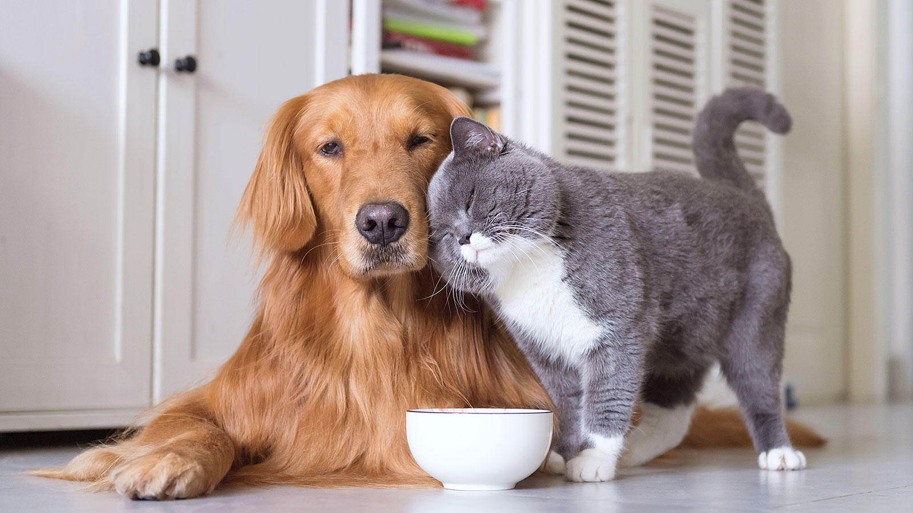

When Tindogs was created, it was born from the idea that no animal or human should ever be left alone. In 2020, the Coronavirus pandemic hit and self-isolation took a toll on both our mental and physical health. Although for some these restrictions have since been loosened, our lives still have not gone back to normal and there continues to be a distance that divides us (one that is normally about 2 meters long). At the same time, demand for animal adoption skyrocketed and many animals were able to find homes. While demand remains high, we have a new crisis on our hands; not every animal was adopted. People remain on waiting lists and animals remain in shelters, thus bringing us back to our main question: how can we get animals into homes, and make people happy? What if we could make these connections from a distance?
By partnering with shelters across the country, Tindogs make the process of connecting, choosing, and adopting a new friend into the family easy. Say goodbye to wait-times, and say hello to a quick, convenient, and accessible adoption process.
When you choose an animal that you would like to adopt, shelters can see your profile and make sure that you are the right fit. Though it may sound tedious, this helps make sure that your forever friend will be with you forever, and that you will not have any unwelcome surprises once you take them home. Once you fall in love with the animal of your choice, it is only a couple of conversations, and a bit of cash, then you get to take them home.
Simply being in the presence of animals has been proven to have positive effects on mental health and general wellbeing. Why do you think that universities and other academic institutions have dogs come in during exam season? While these furry students may not be working towards a degree, they are helping others take a break and feel relaxed in a time of heightened stress. We hope to reproduce this effect by making animal adoption more accessible to those who may not be able to go to visit a shelter in person and give them the same opportunities as everyone else. Tindogs wants to help everyone that we can; those who walk on two legs, or on four.
From the Tindogs Team
Meat our Team